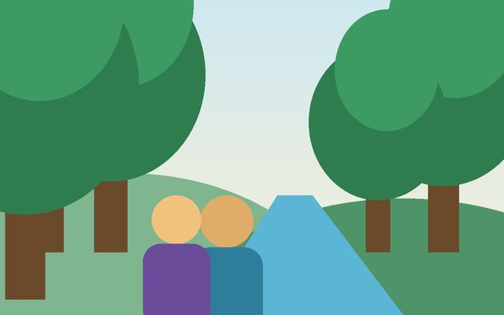

Aprender Mais
Categoria: Educação
Reforço escolar e leitura para crianças e adolescentes.
Resultados: 420 alunos atendidos.
Instituto Raízes do Amanhã
Categoria: Educação
Reforço escolar e leitura para crianças e adolescentes.
Resultados: 420 alunos atendidos.

Categoria: Meio ambiente
Hortas comunitárias e reflorestamento de nascentes.
Resultados: 5.200 mudas plantadas.
Categoria: Saúde
Mutirões de atendimento e orientação em bairros distantes.
Resultados: 3.100 atendimentos.
Doe seu tempo e suas habilidades. Vagas abertas:
Toda doação é aplicada nos projetos. Em 2025: 78% nas atividades, 16% na estrutura e 6% em comunicação.
Chave Pix (exemplo): contato@raizesdoamanha.org.br
Para doar de outras formas, cadastre-se como apoiador.